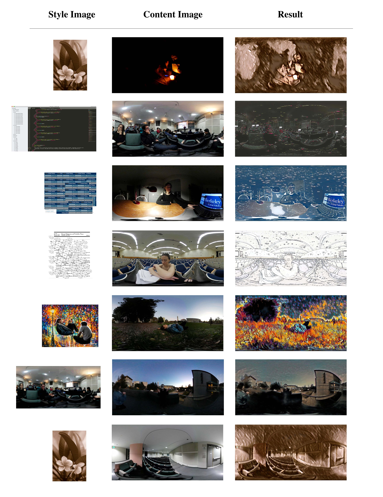
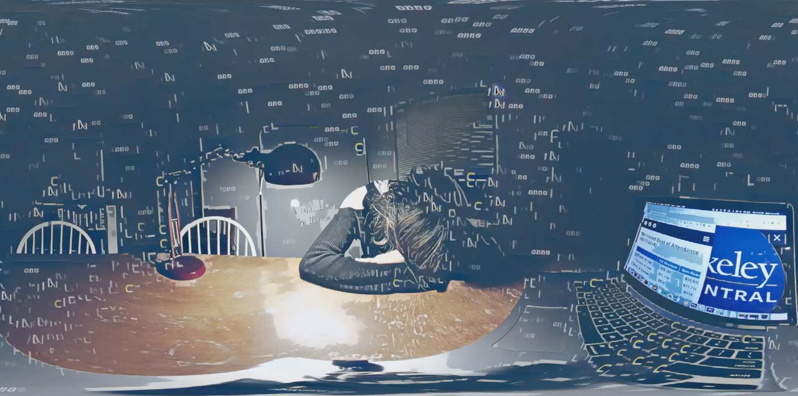
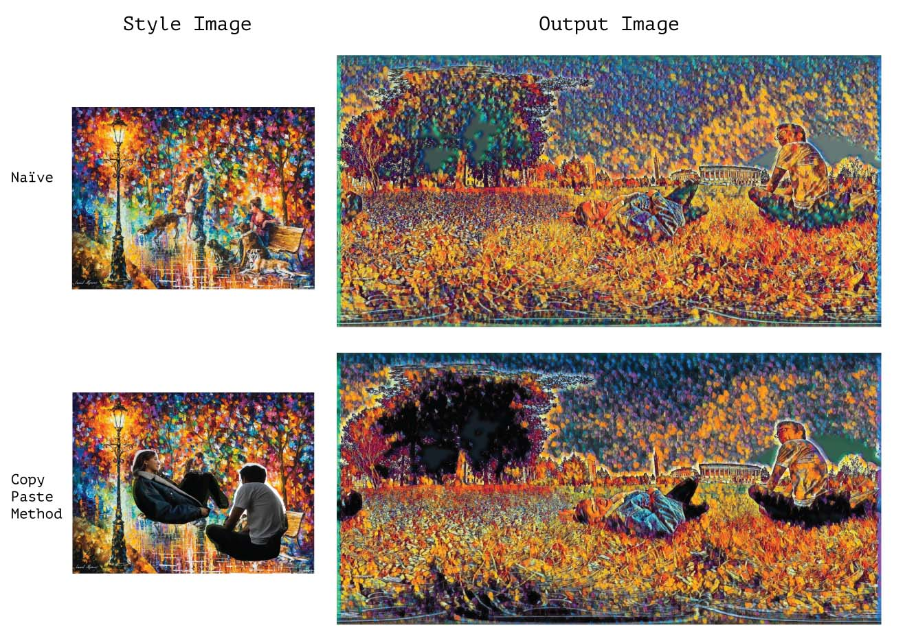
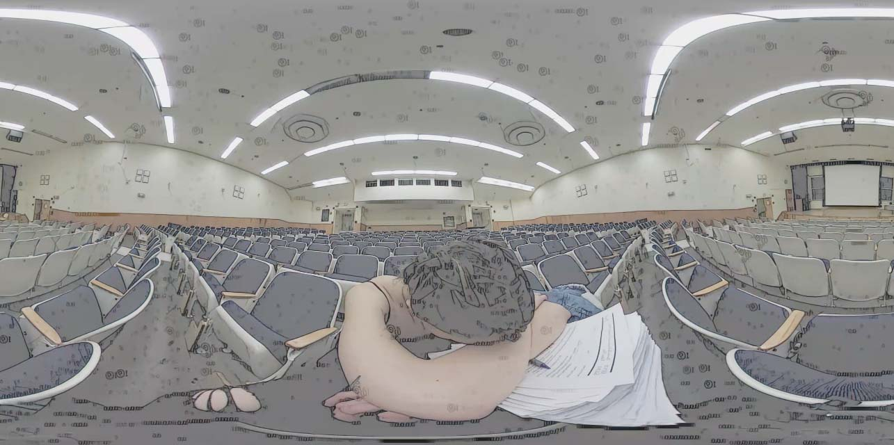
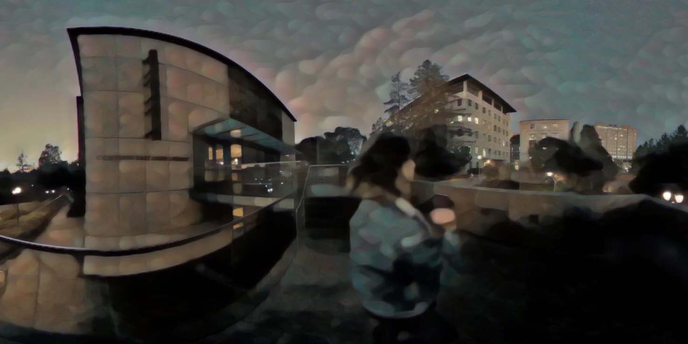

<!DOCTYPE html><html lang="en"><head><meta charset="utf-8"><meta name="viewport" content="width=device-width, initial-scale=1.0"><title>cdste</title><link rel="stylesheet" type="text/css" href="//fonts.googleapis.com/css?family=Ubuntu+Mono|Lato"><link rel="stylesheet" href="../../res/main.css"><link rel="stylesheet" href="../../res/grid.css"><link rel="stylesheet" href="../../res/project.css"></head></html><body><div class="project-page"><div class="body_div"><div class="vertical_center"><a href="../../index.html"><div id="site_title">$ cd Ste<div class="box blink"> </div></div></a><div class="project-title">Neural Style Transfer for So Long, and Thanks for all the Compute</div><div class="role"><span class="bold">Role:</span>directing, acting, editing, research, software development</div><div class="role"><span class="bold">Screening:</span>Film was screened at the<a href="https://ivyfilmfestival2020.org/" target="_blank" class="sub-link">IVY Film Festival 2020</a></div><div class="doc-link"><a href="https://inst.eecs.berkeley.edu/~cs194-26/fa18/upload/files/projFinalProposed/cs194-26-adv/docs/" target="_blank">Project Documentation</a></div><iframe width="560" height="315" src="https://www.youtube.com/embed/mfZ9-9tH_uE" frameborder="0" allow="accelerometer; autoplay; encrypted-media; gyroscope; picture-in-picture" allowfullscreen="allowfullscreen"></iframe><div class="blurb">This short is about a Senior in College that is so stressed with finishing her last semester that she dreams of a monster that takes her diploma from her. She is taken through different nightmares from her college experience at UCBerkeley to finally realize, that it will be all ok.<br><br>Our key takeaway from this project was thinking about the tool less as AI artist and more as a content-aware filter.<br><br>It's an extremely flexible tool and has an almost infinite parameter space of style images and outputs, but the method also had extremely slow training times, and we needed a lot of time to iterate on our results. Thats what we saw as the main drawback: the slow iteration. It took us a month to evaluate Pix2pix fully, and another month to generate the nets with PyTorch to use for this project. Still, we only had about 24 samples to draw off of, and although towards the end we had some general heuristics for what would work, we still didn't have an amazing way of finding the perfect style images for what we wanted. In conclusion though, we show that you can express nuanced feeling using the medium of 360 footage combined with style transferring.</div><div data-colcade="columns: .grid-col, items: .grid-item" class="col-2 grid"><div class="grid-col grid-col--1"></div><div class="grid-col grid-col--2"></div><div class="grid-item"><div class="grid-img"></div></div><div class="grid-item"><div class="grid-img"></div></div><div class="grid-item"><div class="grid-img"></div></div><div class="grid-item"><div class="grid-img"></div></div><div class="grid-item"><div class="grid-img"></div></div></div></div></div></div><script src="https://ajax.googleapis.com/ajax/libs/jquery/1.8.3/jquery.min.js"></script><script src="https://unpkg.com/colcade@0/colcade.js"></script><script src="../../res/app.js"></script></body>